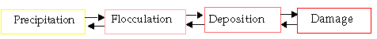

Asphaltene modeling is decomposed into different stages:

The double arrow indicates reversibility (partial or total). Precipitation
triggers the sequence of flocculation deposition and damage, including
a viscosity effect, as detailed below.